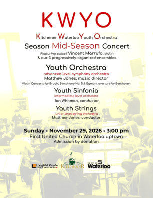
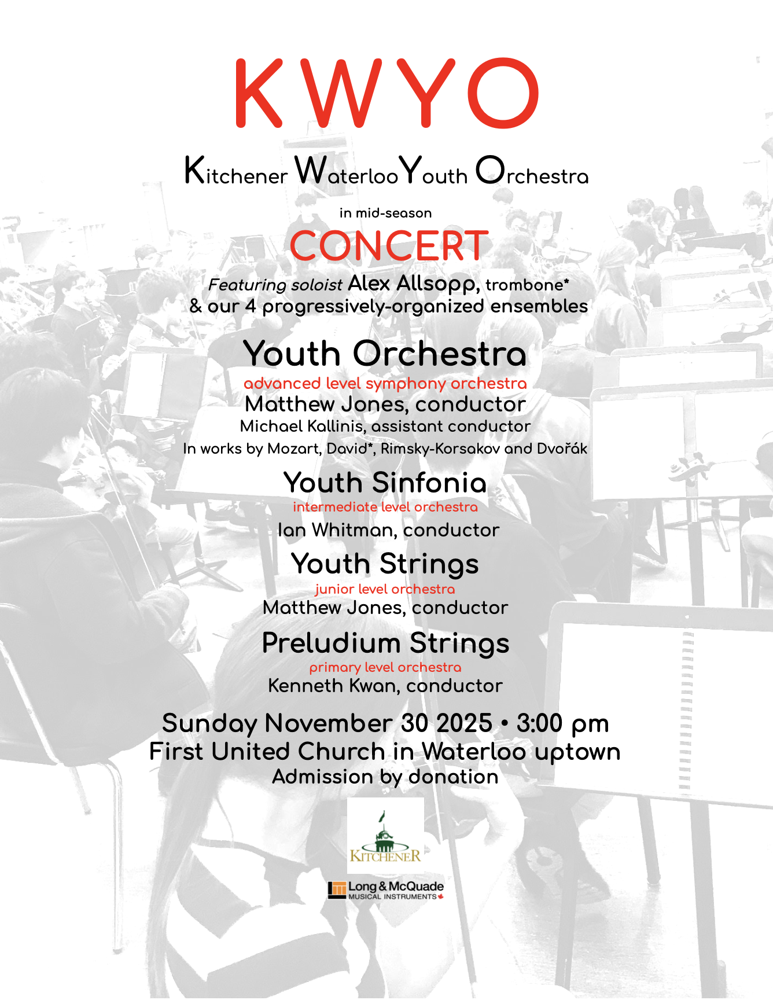
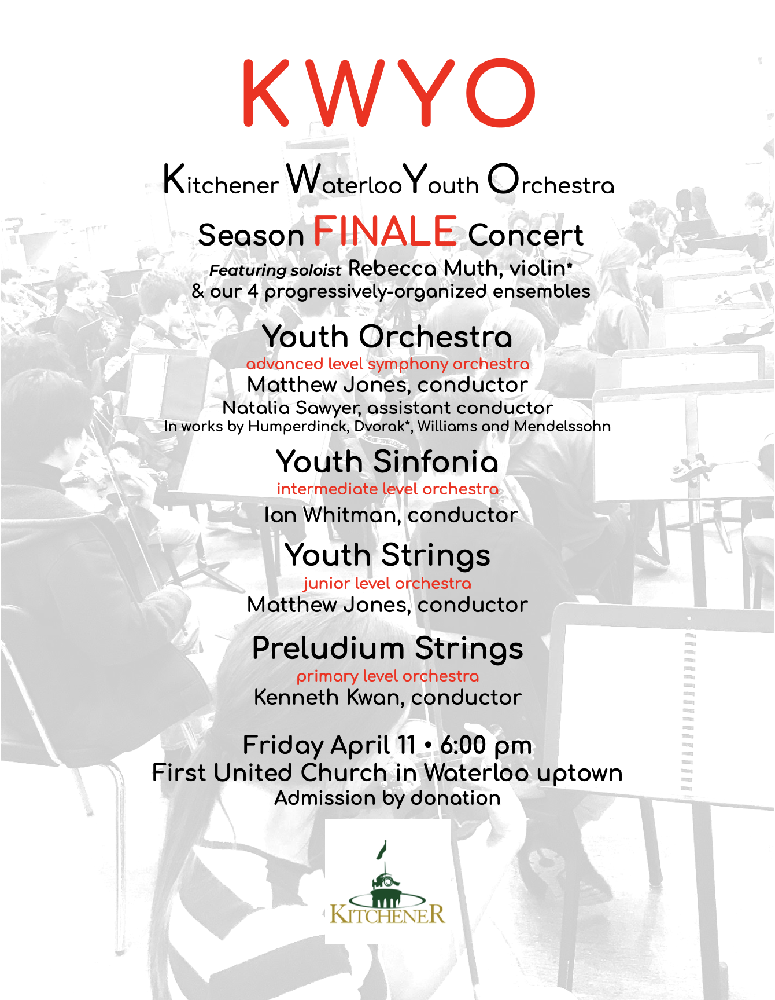

KWYO invites YOU to join us for concerts celebrating the young musicians' achievements! Led by our devoted conductors, KWYO concerts culminate each term of activities and feature our three orchestras as well as the Youth Orchestra (advanced level symphony) soloists, the annual Concerto Competition winners.
2026-27 KWYO Mid-Season Concert
Sunday, November 29, 3-5 pm
Featured Soloist: Vincent Marruffo, violin
Location:
First United Church
116 William St W, Waterloo, N2L 1J3
Tickets:
Admission by donation

2026-27 KWYO Final Concert
Sunday, April 11, 3-5 pm
Soloist TBA
2025-26 KWYO Mid-Season Concert
Sunday, November 30, 3-5 pm
Featured Soloist: Alex Allsopp, Trombone

2025-26 KWYO Final Concert
Sunday, April 26, 3-5 pm
Featured Soloists: Yesol Seo, cello & Isaac Shantz, French horn
2024-25 KWYO Mid-Season Concert
Friday, December 6, 6-8 pm

2024-25 KWYO Final Concert
Friday, April 11, 6-8 pm
Featured Soloist: Rebecca Muth, Violin
2023-24 KWYO Mid-Season Concert
Friday, December 1, 6-8 pm
Featured Soloists: Sarah Rodriguez-Valtierra, violin & Samuel Molina, violin
2023-24 KWYO Final Concert
Friday, April 12, 6-8 pm
Featured Soloist: Samuel Yi, violin